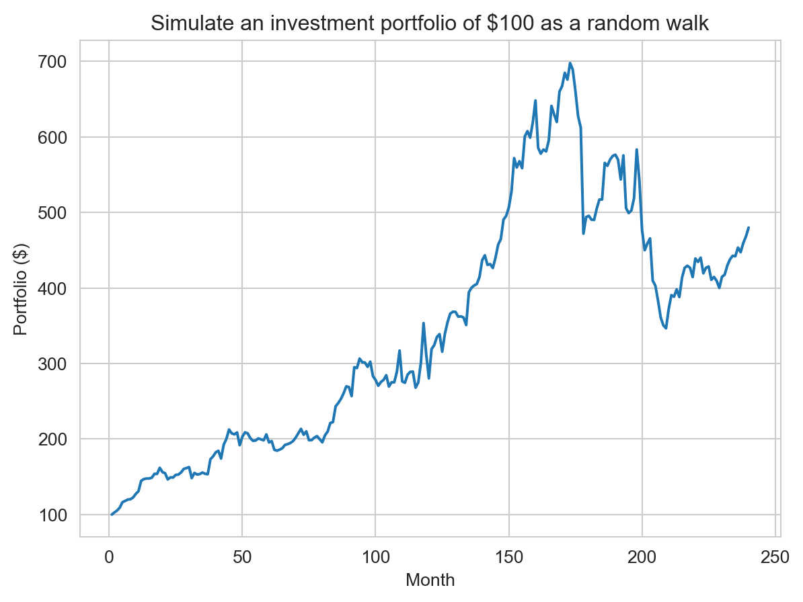
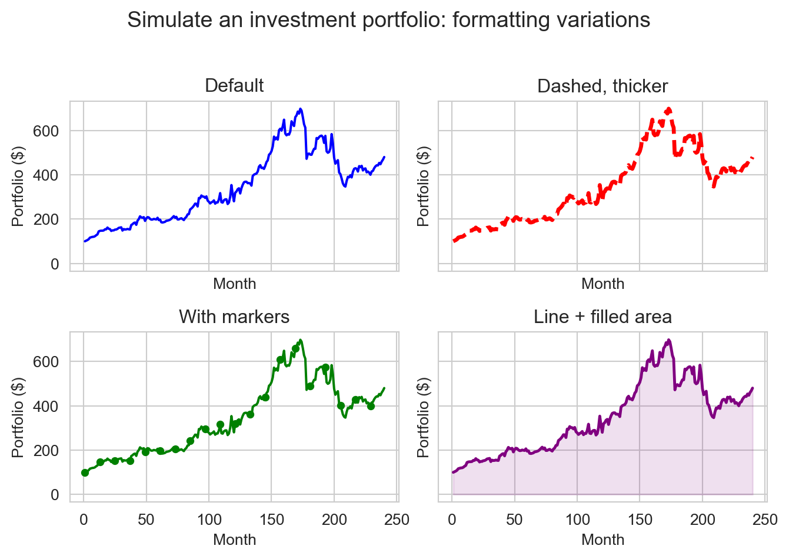
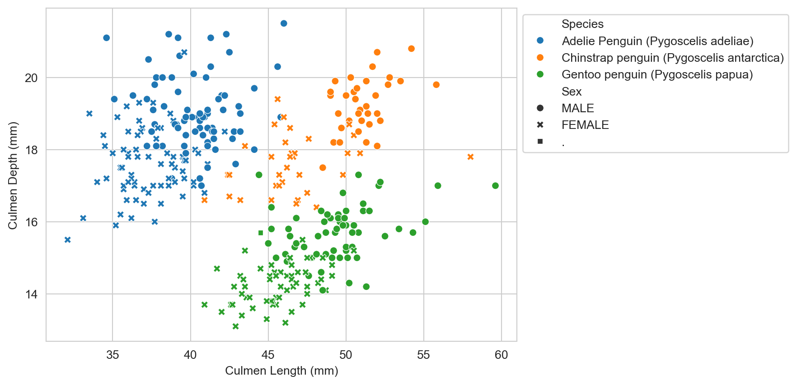
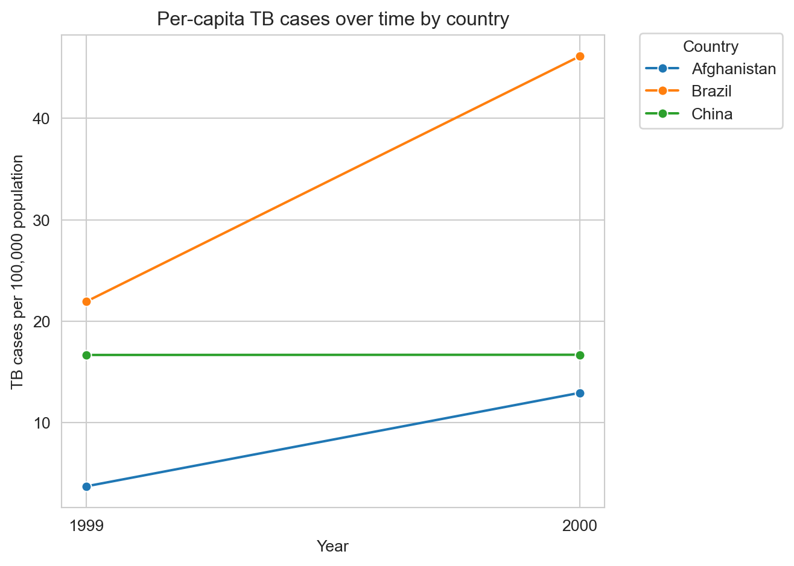
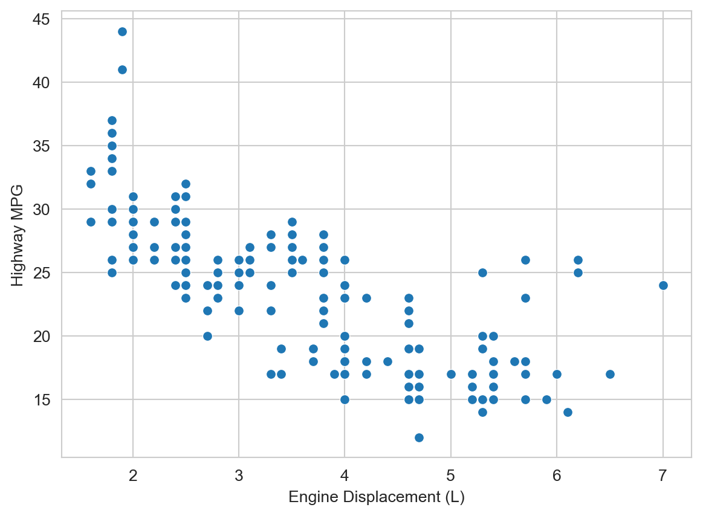
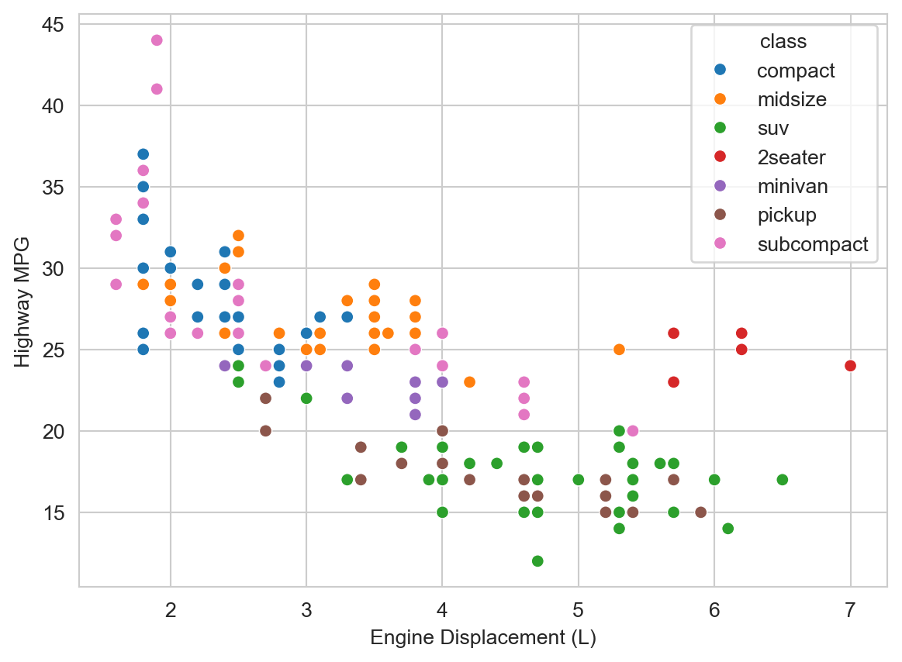
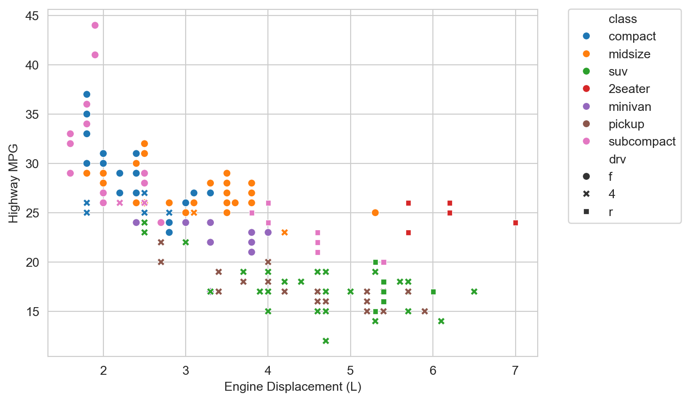

import numpy as np
import pandas as pd
from matplotlib import pyplot as plt
import seaborn as sns
sns.set_style("whitegrid")3 Data Visualization with Python
Getting started with Matplotlib and Seaborn
Open the live notebook in Google Colab or download the live notebook
.We have already seen a few examples of visualizing data using Python’s Matplotlib and Seaborn libraries, but purposely elided the details. Today will we focus on those tools. Matplotlib is a “lower-level” plotting library for producing 2-D figures while Seaborn is a higher-level library built on top of Matplotlib that provides convenient functions for common statistical visualizations.
Visualization is not just about the mechanics of making figures. It is a powerful exploratory tool for understanding data, and a critical tool for clearly and accurately communicating those insights to others. The fanciest, most “beautiful”, plots are useless if they do not clearly convey the intended message. Conversely, a simple plot that clearly conveys an important insight can be very powerful.
Let’s get started with our standard imports. Note the new additions for Matplotlib and Seaborn. As with the other libraries we will use the community import prefix conventions. We also set a default plotting style for Seaborn to use.
TipProgrammatic plotting?
You should expect that any thing you could do (and any feature that was available) with a graphical plotting tool is possible to do programmatically. A difference is that instead of a series of clicks to “build” up the desired figure, you have a series of programmatic statements to define the figure. These libraries will have a “final” step, often a show function or method, to actually render the figure on the screen (although this may be implicit in some environments, such as our IPython notebooks). Why do the libraries work this way? So that we can make changes to the plot before rendering. The separate show step is how we indicate we are done with that configuration process. Compared to graphical approaches, regenerating the same figure, with all its relevant features, should take no time. Resist the temptation to make manual tweaks, no matter how small, to a figure after it is rendered. Instead, make the changes to the code and re-run the rendering step. That was you have a complete and reproducible “recipe” for (re)making the figure in the future. The mostly likely person to need to adjust the future is you! Think of this as a way of being kind to future you.
Matplotlib
Recall our previous experiments with random walks to simulate an investment portfolio.
import math
initial = 100 # Initial portfolio balance
mean = 0.01 # Mean monthly return
std = 0.045 # Estimated standard deviation of monthly return
# Simulate a random walk portfolio
steps = np.random.laplace(1+ 0.01, 0.045 / math.sqrt(2), 240)
portfolio = 100 * np.cumprod(steps)We can then plot the portfolio balance over time as a line plot. We see the 3 parts of the plotting operation described in the reading: 1) plotting the x,y data for each (in this case only) series, 2) adding relevant axis labels and a title, and 3) rendering the figure on the screen.
- 1
-
Generate a line plot where the x values are
range(1, len(portfolio)+1), i.e., the months, and the y values are the portfolio balance at each month. - 2
- Add relevant axis labels and a title.
- 3
- Render the figure on the screen.

TipWhen do I need
plt.show()?
In the default “interactive” IPython notebook configuration we are using, the final plt.show() step is actually optional (like shown below). The notebook will automatically render the current figure when the cell finishes executing. However, it is good practice to include this step explicitly, especially if you later run the same code in a different environment (e.g., a script or other non-interactive setting) where this automatic rendering does not occur.
plt.plot(range(1, len(portfolio)+1), portfolio)
plt.xlabel("Month")
plt.ylabel("Portfolio ($)")
plt.title(f"Simulate an investment portfolio of ${initial} as a random walk")Text(0.5, 1.0, 'Simulate an investment portfolio of $100 as a random walk')
Stateful vs. Object-Oriented APIs
As described in the reading, Matplotlib has two APIs (application programming interfaces) for creating figures: the “stateful” API (as shown above) and the “object-oriented” API. The former maintains an internal reference to the current figure and axes (to which plotting commands are applied), while the latter uses explicit figure and axes objects (i.e., you control which figure and axes are modified by a specific operation). The stateful API is can be simpler for quick plots, while the object-oriented API can enable more control for complex figures. Here is the same plot as above using the object-oriented API. We explicitly create a figure and axes object with plt.subplots(), and then use the axes object to call plotting methods. Note that are are some differences in method names (e.g., set_xlabel vs. xlabel) between the two APIs.
fig, ax = plt.subplots()
ax.plot(range(1, len(portfolio)+1), portfolio)
ax.set_xlabel("Month")
ax.set_ylabel("Portfolio ($)")
ax.set_title(f"Simulate an investment portfolio of ${initial} as a random walk")
plt.show()
Figure and Axes
A Matplotlib figure is the entire image or plot that is generated. A figure can contain one or more axes, which are the individual plots or subplots within the figure. Each axes has its own coordinate system, axis labels, title, and data series. Using the object-oriented API, we can create a figure with multiple axes (subplots) and customize each one individually. Here we create a 2x2 grid of subplots, each showing the same portfolio data but with different formatting options. The layout does not need to be square, subplots can be arranged in a variety of ways.
fig, axes = plt.subplots(2, 2, sharex=True, sharey=True)
months = range(1, len(portfolio) + 1)
# Top-left: simple default line
axes[0][0].plot(months, portfolio, color="blue")
axes[0][0].set_title("Default")
axes[0][0].set_xlabel("Month")
axes[0][0].set_ylabel("Portfolio ($)")
# Top-right: thicker dashed red line
axes[0][1].plot(months, portfolio, color="red", linestyle="--", linewidth=2.5)
axes[0][1].set_title("Dashed, thicker")
axes[0][1].set_xlabel("Month")
axes[0][1].set_ylabel("Portfolio ($)")
# Bottom-left: green line with yearly markers (sparser markers)
axes[1][0].plot(months, portfolio, color="green", marker="o", markersize=4, markevery=12)
axes[1][0].set_title("With markers")
axes[1][0].set_xlabel("Month")
axes[1][0].set_ylabel("Portfolio ($)")
# Bottom-right: purple line with filled area under curve and lighter grid
axes[1][1].plot(months, portfolio, color="purple", linewidth=1.8)
axes[1][1].fill_between(months, portfolio, color="purple", alpha=0.12)
axes[1][1].set_title("Line + filled area")
axes[1][1].set_xlabel("Month")
axes[1][1].set_ylabel("Portfolio ($)")
fig.suptitle(f"Simulate an investment portfolio: formatting variations", fontsize=14)
plt.tight_layout(rect=[0, 0, 1, 0.96])
plt.show()
Data visualization with Seaborn
As noted in the reading, some aspects of Matplotlib have begun to “show their age”. Newer libraries, such as Seaborn, have been built on top of Matplotlib’s powerful foundation to provide a higher-level interface for common statistical visualizations. For example, Matplotlib pre-dated Pandas. While it is very possible to plot Pandas DataFrames and Series with Matplotlib a lot of boilerplate code was required. Seaborn was built with Pandas in mind, making it very easy to create plots directly from DataFrames (and Pandas now has built-in wrappers for plotting that use Matplotlib).
URL = "https://raw.githubusercontent.com/PhilChodrow/ml-notes/main/data/palmer-penguins/palmer-penguins.csv"
df = pd.read_csv(URL)
df.head()| studyName | Sample Number | Species | Region | Island | Stage | Individual ID | Clutch Completion | Date Egg | Culmen Length (mm) | Culmen Depth (mm) | Flipper Length (mm) | Body Mass (g) | Sex | Delta 15 N (o/oo) | Delta 13 C (o/oo) | Comments | |
|---|---|---|---|---|---|---|---|---|---|---|---|---|---|---|---|---|---|
| 0 | PAL0708 | 1 | Adelie Penguin (Pygoscelis adeliae) | Anvers | Torgersen | Adult, 1 Egg Stage | N1A1 | Yes | 11/11/07 | 39.1 | 18.7 | 181.0 | 3750.0 | MALE | NaN | NaN | Not enough blood for isotopes. |
| 1 | PAL0708 | 2 | Adelie Penguin (Pygoscelis adeliae) | Anvers | Torgersen | Adult, 1 Egg Stage | N1A2 | Yes | 11/11/07 | 39.5 | 17.4 | 186.0 | 3800.0 | FEMALE | 8.94956 | -24.69454 | NaN |
| 2 | PAL0708 | 3 | Adelie Penguin (Pygoscelis adeliae) | Anvers | Torgersen | Adult, 1 Egg Stage | N2A1 | Yes | 11/16/07 | 40.3 | 18.0 | 195.0 | 3250.0 | FEMALE | 8.36821 | -25.33302 | NaN |
| 3 | PAL0708 | 4 | Adelie Penguin (Pygoscelis adeliae) | Anvers | Torgersen | Adult, 1 Egg Stage | N2A2 | Yes | 11/16/07 | NaN | NaN | NaN | NaN | NaN | NaN | NaN | Adult not sampled. |
| 4 | PAL0708 | 5 | Adelie Penguin (Pygoscelis adeliae) | Anvers | Torgersen | Adult, 1 Egg Stage | N3A1 | Yes | 11/16/07 | 36.7 | 19.3 | 193.0 | 3450.0 | FEMALE | 8.76651 | -25.32426 | NaN |
For example, we can quickly create a scatter plot of culmen length vs. culmen depth for the Palmer Penguins dataset(Horst, Hill, and Gorman 2020), stratified by species and sex. That is a pretty powerful one-liner!
Looking at the function call, we see that we provide the DataFrame, and then specify which columns to use for the x and y values and the other attributes of each point (equivalent to “aesthetics” in R’s ggplot2). We can map the different visual attributes of each point to either a fixed value (the default) or a specific variable in the data. With the latter we can communicate multivariate relationships in a single plot, e.g., the distinct beak shapes of the different penguin species.
When developing a visualization, we typical start by thinking about the overall goal of the visualization. Are trying to communicate a relationship between variables, or the distribution continuous or categorical variables? That will be determine the general type of plot to use (e.g., scatter plot, line plot, histogram, box plot, etc.). Next we will consider which variables to map to which visual attributes (x and y position, color/hue, shape/style, size, etc.) to show additional multivariate relationships. Finally, we can customize the figure with titles, axis labels, legends, and other formatting options.
Here we were interested in the relationship of beak metrics, length vs. depth, so we used a scatter plot (since each point represents an individual penguin). We mapped species and sex to color and shape, respectively, to show how those categorical variables relate to beak morphology. The default labels and legend were generally sufficient, with a small adjustment to the legend position so it did not overlap the data.
ax = sns.scatterplot(df, x="Culmen Length (mm)", y="Culmen Depth (mm)", hue="Species", style="Sex")
sns.move_legend(ax, "upper left", bbox_to_anchor=(1, 1))
plt.show()
NoteWhat is the “.” for the sex variable? (Answer before expanding)
Missing data!
“Tidy” data: Wide vs. long format
“Happy families are all alike; every unhappy family is unhappy in its own way.”” — Leo Tolstoy
“Tidy datasets are all alike, but every messy dataset is messy in its own way.” — Hadley Wickham
There are many ways to structure a dataset, but some structures are more conducive to analysis and visualization than others. “Tidy” data is a standardized way of structuring datasets popularized by Hadley Wickham and the Tidyverse family of R packages(Wickham, Çetinkaya-Rundel, and Grolemund 2023). This is also generically described as “long” format data, as opposed to “wide” format data.
The principles for long-format (“tidy”) data are:
- Each variable is a column; each column is a variable.
- Each observation is a row; each row is an observation.
- Each value is a cell; each cell is a single value.
Seaborn supports both long and wide format data, but we will generally find long format data easier to work with and more portable between data science environments (e.g., Python and R). Here we will focus on working with (and creating) long format data.
Consider this snippet of example(Wickham, Çetinkaya-Rundel, and Grolemund 2023) data of Tuberculosis (TB) cases over two years, first in long format and then in wide format.
tb_long = pd.DataFrame({
"country": ["Afghanistan", "Afghanistan", "Brazil", "Brazil", "China", "China"],
"year": [1999, 2000, 1999, 2000, 1999, 2000],
"cases": [745, 2666, 37737, 80488, 212258, 213766],
})
tb_long| country | year | cases | |
|---|---|---|---|
| 0 | Afghanistan | 1999 | 745 |
| 1 | Afghanistan | 2000 | 2666 |
| 2 | Brazil | 1999 | 37737 |
| 3 | Brazil | 2000 | 80488 |
| 4 | China | 1999 | 212258 |
| 5 | China | 2000 | 213766 |
tb_wide = pd.DataFrame({
"1999": [745, 37737, 212258],
"2000": [2666, 80488, 213766],
}, index=["Afghanistan", "Brazil", "China"])
tb_wide| 1999 | 2000 | |
|---|---|---|
| Afghanistan | 745 | 2666 |
| Brazil | 37737 | 80488 |
| China | 212258 | 213766 |
The latter, wide format, is how we might represent this data in a spreadsheet. But it can be tricker to work with programmatically. For example, we are largely limited to 3 variables (row, column and value) without using more complex multi-indexing features of Pandas (which are not, for example, supported by Seaborn). Those countries are very different sizes. It would be useful to normalize the case counts by population, but there is no obvious way to add that information in the wide format without creating additional tables. In a long format, we can easily add additional variables, such as population, as additional columns.
tb_long = pd.DataFrame({
"country": ["Afghanistan", "Afghanistan", "Brazil", "Brazil", "China", "China"],
"year": [1999, 2000, 1999, 2000, 1999, 2000],
"cases": [745, 2666, 37737, 80488, 212258, 213766],
"population": [19987071, 20595360, 172006362, 174504898, 1272915272, 1280428583],
})
tb_long| country | year | cases | population | |
|---|---|---|---|---|
| 0 | Afghanistan | 1999 | 745 | 19987071 |
| 1 | Afghanistan | 2000 | 2666 | 20595360 |
| 2 | Brazil | 1999 | 37737 | 172006362 |
| 3 | Brazil | 2000 | 80488 | 174504898 |
| 4 | China | 1999 | 212258 | 1272915272 |
| 5 | China | 2000 | 213766 | 1280428583 |
We can now readily visualize TB cases as per-capita rates.
# Compute cases per 100,000 population as new column
tb_long["cases_per_100k"] = tb_long["cases"] / tb_long["population"] * 100000
ax = sns.lineplot(tb_long, x="year", y="cases_per_100k", hue="country", marker="o")
ax.set_xlabel("Year")
ax.set_ylabel("TB cases per 100,000 population")
ax.set_title("Per-capita TB cases over time by country")
ax.set_xticks(sorted(tb_long["year"].unique()))
plt.ticklabel_format(style='plain', axis='x', useOffset=False) # Prevent scientific notation on x-axis
plt.legend(title="Country", bbox_to_anchor=(1.05, 1.02), loc="upper left")
plt.tight_layout()
plt.show()
We can convert between long and wide formats using the Pandas melt and pivot functions.
Example exploratory data analysis
The following is a subset of fuel economy data from https://fueleconomy.gov distributed as part of the ggplot2 R package(Wickham 2016). We are particularly interested in the hwy variable, which is the highway miles-per-gallon (MPG) rating for each vehicle.
URL = "https://raw.githubusercontent.com/tidyverse/ggplot2/refs/heads/main/data-raw/mpg.csv"
mpg_df = pd.read_csv(URL)
mpg_df.head()| manufacturer | model | displ | year | cyl | trans | drv | cty | hwy | fl | class | |
|---|---|---|---|---|---|---|---|---|---|---|---|
| 0 | audi | a4 | 1.8 | 1999 | 4 | auto(l5) | f | 18 | 29 | p | compact |
| 1 | audi | a4 | 1.8 | 1999 | 4 | manual(m5) | f | 21 | 29 | p | compact |
| 2 | audi | a4 | 2.0 | 2008 | 4 | manual(m6) | f | 20 | 31 | p | compact |
| 3 | audi | a4 | 2.0 | 2008 | 4 | auto(av) | f | 21 | 30 | p | compact |
| 4 | audi | a4 | 2.8 | 1999 | 6 | auto(l5) | f | 16 | 26 | p | compact |
We would hypothesize that engine displacement (displ, in liters) is negatively correlated with highway MPG (hwy), i.e., larger engines tend to be less fuel efficient. And indeed that seems to be the case.
ax = sns.scatterplot(mpg_df, x="displ", y="hwy")
ax.set_xlabel("Engine Displacement (L)")
ax.set_ylabel("Highway MPG")
plt.show()
But there are some potentially interesting outliers to the right, i.e., vehicles with large engines but relatively high highway MPG. What do you hypothesize might be going on there? We can add additional variables to the plot to help us explore this question. Let’s add vehicle class (class, e.g., “compact”, “suv”, etc.) as a color/hue attribute.
ax = sns.scatterplot(mpg_df, x="displ", y="hwy", hue="class")
ax.set_xlabel("Engine Displacement (L)")
ax.set_ylabel("Highway MPG")
plt.show()
We observe that those outliers are mostly in the “2seater” class. Those are likely sports cars with large, powerful engines, that are relatively light weight (compared to larger vehicles like SUVs and trucks) and thus achieve relatively high highway MPG despite the large engine displacement.
We observe some additional trends. At a given engine displacement there are appear to be two clusters (or “bands”) of vehicles: one with relatively high highway MPG and one with relatively lower highway MPG. The latter appear to be mostly “SUVs” and “pickups”. Those are likely to be heavier vehicles with 4-wheel drive, which we hypothesize might reduce fuel economy. Let’s add drive type (drv, e.g., “4” for 4-wheel drive, “f” for front-wheel drive, etc.) as a shape/style attribute to the plot.
ax = sns.scatterplot(mpg_df, x="displ", y="hwy", hue="class", style="drv")
ax.set_xlabel("Engine Displacement (L)")
ax.set_ylabel("Highway MPG")
plt.legend(bbox_to_anchor=(1.05, 1.02), loc="upper left")
plt.show()
Indeed for a given displacement and vehicle class, 4-wheel drive vehicles then tend to have lower highway MPG than their 2-wheel drive, primarily front-wheel drive, counterparts.
Better Figures
“Ten Simple Rules for Better Figures”(Rougier 2014) provides a nice checklist for improving the clarity and effectiveness of scientific figures.
- Know Your Audience
- Identify Your Message
- Adapt the Figure to the Support Medium
- Captions Are Not Optional
- Do Not Trust the Defaults
- Use Color Effectively
- Do Not Mislead the Reader
- Avoid “Chartjunk”
- Message Trumps Beauty
- Get the Right Tool
I imagine you can readily think of examples of figures that violate one or more of these rules (especially “Do not mislead the reader”). Some possibly less familiar suggestions include “Adapt the figure to the support medium” and “Avoid ‘Chartjunk’”. Different settings require different figure designs, even for the same data. For example, a presentation audience has a limited amount of time to absorb a figure, so it should be as simple and clear as possible. A figure in a research paper may have more complexity and detail, since the reader can take their time to study it. “Chartjunk” refers to unnecessary or distracting visual elements that do not contribute to the message of the figure, such as excessive grid lines, background colors, etc.
Horst, Allison M, Alison Presmanes Hill, and Kristen B Gorman. 2020. “Allisonhorst/Palmerpenguins: V0.1.0.” Zenodo. https://doi.org/10.5281/ZENODO.3960218.
Rougier, Michael AND Bourne, Nicolas P. AND Droettboom. 2014. “Ten Simple Rules for Better Figures.” PLOS Computational Biology 10 (9): 1–7. https://doi.org/10.1371/journal.pcbi.1003833.
Wickham, Hadley. 2016. Ggplot2: Elegant Graphics for Data Analysis. Springer-Verlag New York. https://ggplot2.tidyverse.org.
Wickham, Hadley, Mine Çetinkaya-Rundel, and Garrett Grolemund. 2023. R for Data Science: Import, Tidy, Transform, Visualize, and Model Data. 2nd ed. O’Reilly Media. https://r4ds.hadley.nz/.
© Michael Linderman and Phil Chodrow, 2025-2026